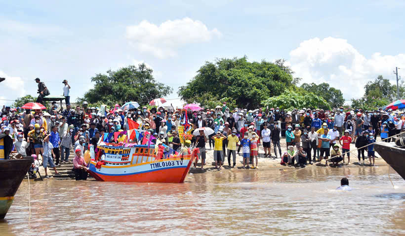

Chào bạn , Tôi tên là Sơn Thị Yến Trang
Tôi là một người rất thích nấu ăn .Và hiện tại tôi đang sống ở Cầu Ngang.
Sở thích của tôi
- nghe nhạc
- đi du lịch
- Nấu ăn
Đặc sản của nơi tôi sống
- Lễ hội Nghinh Ông
Lễ cúng biển Mỹ Long, còn được gọi là Lễ hội Nghinh Ông, là một lễ hội truyền thống độc đáo của ngư dân vùng biển tại thị trấn Mỹ Long, huyện Cầu Ngang, tỉnh Trà Vinh. Lễ hội không chỉ mang đậm nét văn hóa dân gian mà còn là dịp để cộng đồng địa phương thể hiện lòng tri ân với biển cả và cầu mong những điều tốt đẹp.Hàng năm, từ ngày 10 đến ngày 12 tháng 5 âm lịch, ngư dân tại Mỹ Long náo nức chuẩn bị cho lễ hội. Đây là dịp để mọi người tạ ơn ông Nam Hải – vị thần được xem là cứu tinh của người dân khi ra khơi, đồng thời cầu nguyện mưa thuận gió hòa, ngư trường dồi dào cá tôm và bình an cho tất cả những ai mưu sinh trên biển.

Để biết thêm về Lễ hội Nghinh Ông hãy nhấn vào đây
Hy vọng bạn sẽ có thêm thông tin về tôi và nơi tôi sống. Nếu bạn muốn kết nối hoặc có câu hỏi nào, đừng ngần ngại liên hệ qua ytrangson65@gmail.com.